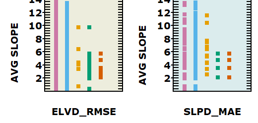

DEMIX Options with Evaluation and Opinion Matrices
DEMIX Options with Evaluation and Opinion Matrices
Database Submenu under Stats,
DEMIX and also on a button the DB toolbar
The remaining options are experimental and may not currently work, or may
only work with older versions of the database. Options may come and go, change positon, or be
renamed
- Mean and median histograms
- Graph filters
- DEMIX tile inventory: shows whether each tile has DTM, DSM, or both
- DEMIX tile summary: creates table showing the number of cells and how
many have sufficient pixels in each land type
- Filter out signed criteria (mean and median, which do not work with the
wine contest)
- Filter for just signed criteria (mean and median, which do not work with the
wine contest)--for instance you could then delete them from the database
- Filter for DEMIX tiles: apply a filter so each DEMIX tile appears only
once, to get tile statistics or to make an index for tile graphs
- 1 degree tiles to cover records in table; creates list of the SW corner
of the 1 degree tiles needed to cover every record in the table.
- Add IMAGE field for difference distribution graphs. This file can
also serve as a summary of the average characteristics of each tile
- Best by sorted geomorphometry
values. Be careful about the caveats so you understand the graph.
Increased control over the results on the graphs
- Graph best DEM (average score) for criteria and filters: makes two
graphs (DSM and DTM) for all criteria and several terrain filters.
Graphs with a legend will be in c:\mapdata\temp
which you must save
- Rank DEMs and find best by criterion and tile. You can change the
tolerances used for ties.
- Graphs with various filters (experimental)
- Key means
- Key medians
- Key 3 params
- Pick criterion (parameter)
- Single tile, all criteria, values
- Simple example
- Sum scores based on active filters
- Ties by opions: adds a field for each DEM to the database, showing where
it is tied for being best and how many DEMs share the tie, and a field
showing CRIT_CAT whether what kind of difference is used for the criterion.
Reod if you change the tolerances.
- Wins and ties: summarize results from Ties by opinions. Call that
if it has not been done already.
- Graph filters
- Winning percentages and shootouts
- Graphs best DEM per tile, by criteria (sort by area)
- Graphs best DEM per tile, by criteria (sort by tile characteristics)
- Graph best DEM (average score) for criteria and filters
- Graph difference values by DEMIX tile
- Sum scores based on active filters, used for Friedman statistics
- Graph best DEM (average score) for criteria
DEMIX wine contest
main page
|
Winning percentages and shootouts
Graphs for DTM and DSM
Graph for
- COP versus ALOS
- COP versus ALOS versus FABDEM
- All 6 DEMs (ties allows, so sum can be over 100%)
Within each graph
- Each row is a wine contest
- Top group each of the 15 criteria
- Next group has filters by tile
- Bottom group has filters by pixel
|
|
|
Best DEM per tile, by criteria
- Tiles on the left, but only areas labelled
- Criteria on the horizontal axis
- Ties shown by multiple color boxes in the column
|
|
|
- Tiles arranged in the same order as in the database
- Labels by area, with a break between areas
|
| |
Plots for mean or median, which are signed. The criteria used in the
wine contest are unsigned
- Tiles arranged in the same order as in the database
- Labels by area, with a break between areas
- Vertical line at 0.
- Points to the left have negative differences, so the
candidate DEM has a lower value than the reference DEM
- Points to the right have postive differences, so the
candidate DEM has higner value than the reference DEM
|
Option details, and snippet of graphical output

|
Best by sorted
geomorphometry values. Be careful about the caveats below
- Vertical axis will be sorted on average slope, forest percentage, and so
on, with the axis title showing the tile characteristic
- May also consdider only a single criterion, which will also
appear on the axis title
- Horizontal column label will be for criterion or land type.
- Two columns, blue for DSM, and brown for DTM
- Only DEMs tied for first in the current tolerance will be
included, and each DEM will always have the same position along the
x axis.
|
| REF_TYPE |
AREA |
ALL |
BARREN |
CLIFF |
FLAT |
FOREST |
GENTLE |
STEEP |
URBAN |
| DTM |
15 |
105 |
102 |
49 |
105 |
105 |
86 |
60 |
79 |
| DSM |
6 |
48 |
46 |
42 |
48 |
48 |
48 |
48 |
43 |
|
DEMIX tile summary. Shows the
number of areas, and the number of tiles that have a sufficient number
of pixels with the appropriate land type. |
DEMIX main page
MICRODEM home page
last revision 5/8/2026